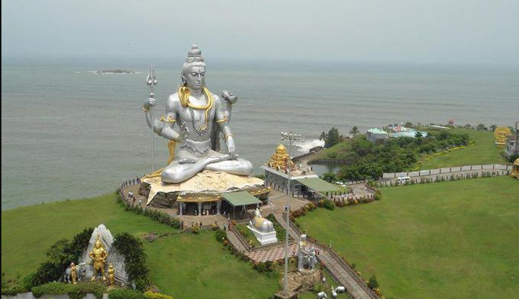
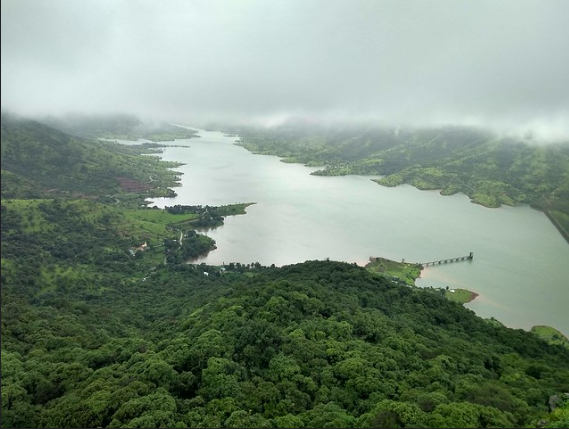

Mahabaleshwar
About
Mahabaleshwar is a hill station in India's forested Western Ghats range, south of Mumbai. It features several elevated viewing points, such as Arthur’s Seat. West of here is centuries-old PratapgadFort, perched atop a mountain spur. East, Lingmala Waterfall tumbles off a sheer cliff. Colorful boats dot Venna Lake, while 5 rivers meet at Panch Ganga Temple to the north.

Mahabaleshwar is a major place of tourism in Maharashtra. Attractions include many hill side look out points with views of surrounding hills, valleys and forests such as Bombay Point, Arthur Seat, Kates Point, Lodwick-Wilson Point, and Elphinston Point. Wilson point is the only location in Mahabaleshwar where both sunrise and sunset can be seen.
Being a relatively cool place, many temperate region cropssuch as strawberries, raspberries, and mulberries have been grown in Mahabaleshwar and surrounding hills.Mahabaleshwar has a borderline tropical monsoon/humid subtropical climate . Very heavy rainfall is a normal occurrence during monsoons. During July, 10–12 days of continuous rains with 100 to 200 mm or 4 to 8 in each day occur each year. There were reports of ice and ground frost formation around Venna Lake in 2018 On August 7, 2019, Mahabaleshwar recorded 330 mm or 12.99 in of rain in 24 hours causing landslides.Mahabaleshwar has been described as the "New Candidate for the wettest place in the world", the title currently held by Cherrapunji.
History
Legend says that a Yadava ruler from 13th century built a small temple and water tank at the source of the river Krishna. The area around Mahabaleshwar called the Vale of Jawali was ruled by the More (clan) who were vassals of the Adilshahi sultanate of Bijapur. In 1656, the founder of Maratha empire, Chatrapati Shri Shivaji Maharaj on account of political circumstances, killed the then ruler of vale of Javali, Chandrarao More, and seized that area. Around that time Shivaji also built a hill fort near Mahabaleshwar called Pratapgad fort.
In 1819, after the demise of the Maratha empire, the British ceded the hills around Mahabaleshwar to the vassal state of Satara. Colonel Lodwick (Later General Sir Lodwick) after climbing the mountains near Mahabaleshwar, recommended the place as a sanatorium for the British forces to governor Sir John Malcolm of Bombay presidency. The Raja of Satara was granted other villages in exchange for the British getting Mahabaleshwar in 1828.In old records Mahabaleshwar was even called as Malcolm Peth after the governor. Mahabaleshwar started gaining prominence when British officials of Bombay presidency such as in 1828, and later Sir Mountstuart Elphinstone, Arthur Malet (for whom the seat at "Point Arthur" is named), Carnac, and many others became regular visitors. A lake called Venna lake was constructed in 1842 to collect water from perennial springs. The Venna river flows from this lake.Bartley Frere, the commissioner of Satara in 1850s built the road from Satara to Mahabaleshwar.
Bestselling offers
Mahableshwar family tour Package
from Rs.6120/-per adult
Ages:0-99
Duration:3hrs
- Meal PLan
- Accomodation
- Parking
- Service Charges
What's Included
- Personal Expenses
- Non-veg Food
- Paragliding
- Extra mattresses
What's not Included
Mahabaleshwar Panchagni Tour package
from Rs.5524/- per adult
Ages:0-99
Duration:3hrs
- Breakfast
- Pickup and Drop from airport
- Toll Parking
- Service Charges
What's Included
- Personal Expenses
- Rock climbing
- Extra meals
- Travel Insurance
What's not Included
Matheran Sightseeing Offer
from Rs.7752/- per adult
Ages:0-99
Duration:3hrs
- Sightseeing at mentioned places
- Double Sharing room
- Parking
- Applicable Taxes
What's Included
- Personal Expenses
- Porterage
- Wildlife Safari
- Travel Insurance